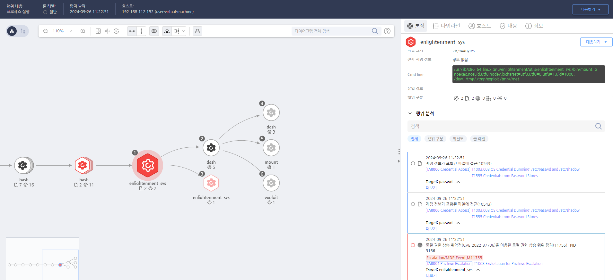

T1068.000.02 Linux LPE2
D3FEND
MITRE ATT&CK 액션을 기준으로 대응 방안을 작성
Detection
모니터링을 통해 권한상승에 악용되는 바이너리 "enlightenment_sys"와 그 실행인자가 비정상적인지 확인합니다.
Detection(EDR)

https://172.18.10.125:8903/#/event/edr/66f4c6b0002dc79500001721
Response
공격자가 생성한 파일을 삭제합니다.
Mitigations
시스템 및 소프트웨어 최신 상태 유지 (M1030 - Patch Management)
- 보안 패치와 업데이트를 주기적으로 적용하여 운영 체제 및 애플리케이션의 취약점을 해결
- 자동 업데이트 기능을 활성화하여 시스템이 최신 보안 패치를 자동으로 설치하도록 설정
- 취약점 관리 시스템을 사용하여 알려진 취약점에 대한 패치를 관리하고 핫픽스 및 보안 업데이트를 신속히 적용
최소 권한 원칙 적용 (M1018 - User Account Management)
- 최소 권한 원칙(Least Privilege Principle)을 적용하여 필요한 권한만 부여
- 관리자 권한을 가진 계정의 수를 최소화하고, 관리자는 필요할 때만 관리자 권한을 사용할 수 있도록 설정
- 사용자 계정에 대해 관리자 권한을 지속적으로 유지하지 않도록 설정하고, 가능한 한 비관리자 권한을 사용
권한 상승 탐지 및 차단 (M1040 - Behavior-Based Detection)
- EDR/XDR 솔루션을 사용하여 권한 상승 시도를 실시간으로 모니터링하고 탐지
- 취약점 악용 활동을 탐지하기 위해 비정상적인 프로세스 생성, 권한 변경, 또는 비정상적인 시스템 호출을 탐지하는 규칙 설정
- 권한 상승 시도나 관리자 계정 탈취 시도를 경고하고 차단하는 정책 활성화
UAC (사용자 계정 컨트롤) 활성화 (M1035 - Access Control)
- 사용자 계정 컨트롤(UAC)을 활성화하여 권한 상승을 시도할 때 사용자의 승인을 요구
- UAC의 설정을 높은 권한 요청에 대한 승인을 요구하도록 설정하여 공격자가 악용할 수 없도록 방지
- UAC의 보안 수준을 강화하여 관리자 계정의 권한 상승을 엄격하게 제어
보안 설정 강화 (M1028 - Configuration Management)
- 불필요한 서비스나 포트를 비활성화하여 취약점을 노출시키지 않도록 설정
- 운영 체제 및 소프트웨어에 대한 보안 설정을 최적화하고, 권한 상승을 위한 잠재적 취약점을 차단
- 비표준 포트 및 서비스의 사용을 최소화하고, 외부에서 접근할 수 있는 시스템 리소스를 제한
네트워크 세분화 및 접근 제어 (M1045 - Network Segmentation and Restriction)
- 네트워크 세분화(Network Segmentation)를 통해 중요한 시스템에 대한 접근을 제한하고, 권한 상승 시도가 확산되지 않도록 차단
- 네트워크 접근 제어를 강화하여 외부 공격자가 시스템 내부로 침투할 수 있는 경로를 차단
- 방화벽 및 VPN을 사용하여 내부 시스템에 대한 외부 접근을 제한
보안 감사 및 로그 관리 (M1047 - System Logging & Monitoring)
- 시스템 로그 및 이벤트 로그를 정기적으로 검토하여 비정상적인 권한 상승 시도를 탐지
- 로그 관리 시스템을 사용하여 권한 상승 이벤트를 실시간으로 추적하고 경고
- Sysmon(Event ID 10) 등을 사용하여 시스템 호출 및 권한 변경과 관련된 이벤트를 모니터링하고 기록
취약점 관리 시스템 사용 (M1030 - Patch Management)
- 취약점 스캐닝 도구를 사용하여 시스템의 취약점과 노출된 취약점을 주기적으로 점검
- 모든 시스템의 보안 취약점을 스캔하고 해결하여 권한 상승을 위한 공격 경로를 차단
- 취약점 관리 솔루션을 사용하여 취약한 구성 요소를 우선적으로 해결하고, 공격자가 악용할 수 있는 취약점을 제거
Affected Techniques
Action 실행시 함께 영향을 받는 다른 Techniqes
| D3FEND |
| D3-SCP System Configuration Permissions |
| D3-PH Platform Hardening |
| D3-SCF System Call Filtering |